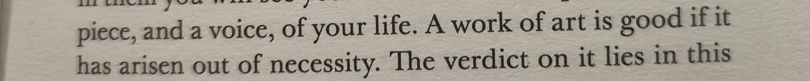
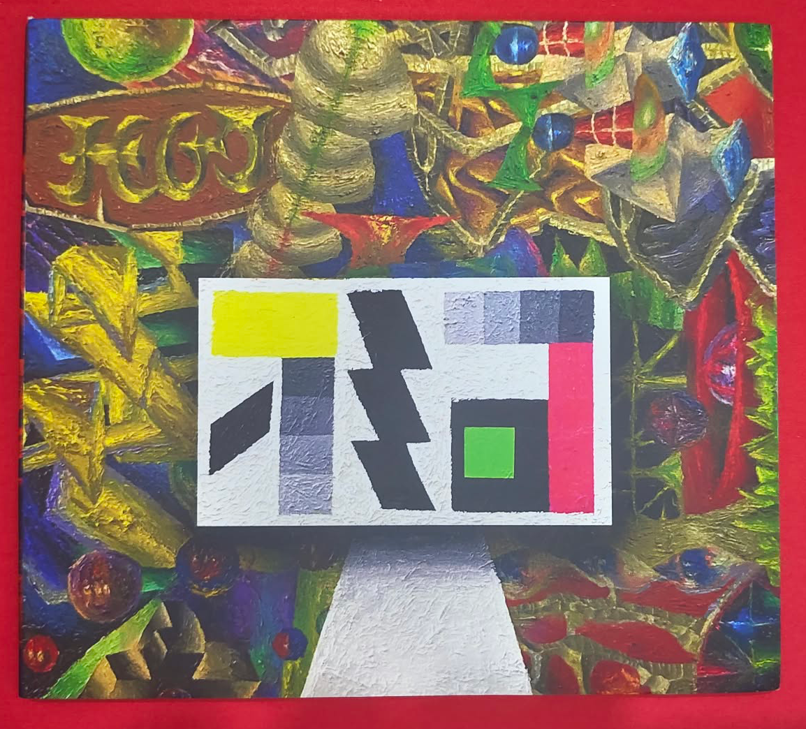
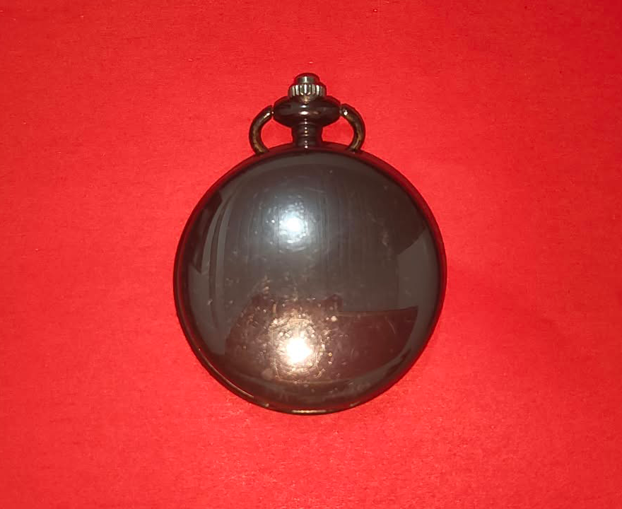

Lived through another year, yet experienced even less than the last. It has been almost a year since
my last post. So today, I decided to make something, a webpage.
In the last year, I would say I was happy. Not happy as in I felt contentment, pleasure, or good fortune, but
happy as in I felt no strong emotions. Happy as in I felt neither sorrow nor jubilee, sickness nor vigor, highs nor lows,
love nor hate. Happy as in lack of experience and personality.
I always valued freedom above everything else. And, as much as possible, keep the little freedom I have--my time.
And that meant no timesinks. No oversleeping, no games, no orgs, no fun, no life. Long story short, I reclused,
always played it safe, no spontaneity, no chaos, no good stories.
Everything sounds very dramatic for what the situation really is. I could have just said
"Nothing notable happened the last year" and could have spared myself in creating this webpage. In actuality, I am doing fine
and could not ask for more. But maybe this year, I will start to work on a better autobiography.
This blog is basically my insights and me looking at things in hindsight. But more importantly, it is a creative exercise,
one that means a lot to me and came from necessity. And Rilke said:

from Letters to a Young Poet

Goon Lagoon EP
Goon Lagoon EP has been very influential to me. It was either
this or King Crimson's In The Court Of The Crimson King/Red.
Must listen (to both).

Brush Pens
By far my favorite stationery. Taxing to use but is such a different
feel from regular pens/markers.

Table Tennis Racket
My table tennis racket: Sanwei Target National forehand,
Fastarc G-1 backhand, and my GOAT's (Anders Lind) blade.

Pocket Watch
Pocket watch my family gifted to me.
Doesn't beat a phone in functionality, but in cool factor, it clears.